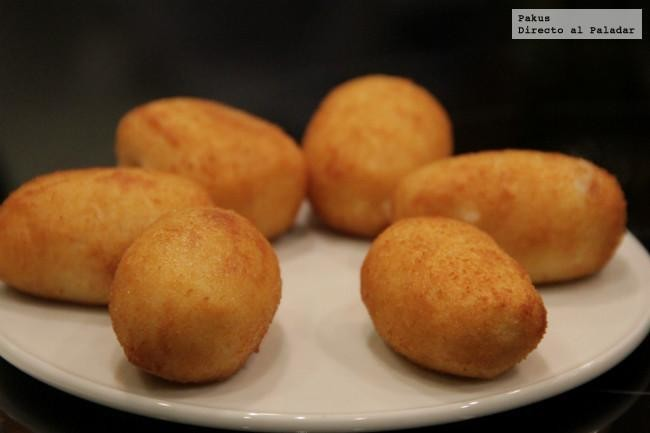
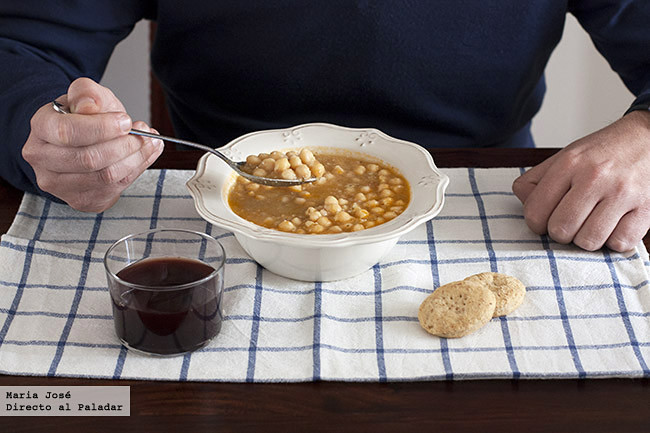

Nombre de Receta

Nombre de Receta
Nombre de Receta
Nombre de Receta
Nombre de Receta
Nombre de Receta
| Nombre de receta | Descripccion | Dificultad | Imagen |
|---|---|---|---|
| Sopa huertana | Las sopas son platos de batalla indispensables en cualquier cocina casera. Apetecen más en invierno pero son tan nutritivos y reconfortantes que merece la pena disfrutar de sopas todo el año. Una buena receta para tener a mano es la sopa huertana, llamada así porque las protagonistas son las verduras y hortalizas de huerta, como el puerro, la patata, la zanahoria o el nabo. | text | |
| Crema de calabacín y zanahoria al curry | Las cremas de verduras son para mí idispensables en los menús cotidianos. Qué infeliz era cuando de niña ponía mala cara a las cremas de mi madre, hasta que un día se me ocurrió probar la de calabacín y quedé convertida para siempre. Hay mil opciones diferentes, pero la crema de calabacín y zanahoria al curry me gusta especialmente por dar un toque distinto a la receta más típica, y porque está buenísima. | text | |
| Croquetas de pollo y jamón | Nadie hará mejor las croquetas que tu madre, pero no tienes que depender de sus tarteras para toda la vida si quieres disfrutar de este clásico de nuestra cocina. Aprende a dominar la técnica de unas croquetas perfectas y podrás presumir cuando tengas visitas en casa, y nada mejor que practicar con la receta de las croquetas de pollo y jamón de Franis Paniego. | text |  |
| Garbanzos guisados | Completan el trío de nuestras legumbres más tradicionales los garbanzos, en este caso con una receta sencillísima de garbanzos guisados. Otro plato estupendo para llevar o congelar, que puede servirnos para empezar el menú o como comida completa si servirmos una buena ración bien acompañada. | text |  |
| Macarrones gratinados a la boloñesa | Es raro el hogar que no tenga sus recetas de pasta habituales, esas que se suelen repetir uno o dos días a la semana. A mí me encanta probar recetas nuevas pero reconozco que hay algo de reconfortante en esos platos de pasta típicos que siempre cocinaban nuestras madres. Y no hay nada que reconforte más que unos macarrones gratinados a la boloñesa. La** pasta al horno es una auténtica delicia** que aquí además se convierte en plato completísimo gracias a la sustanciosa salsa. | text |